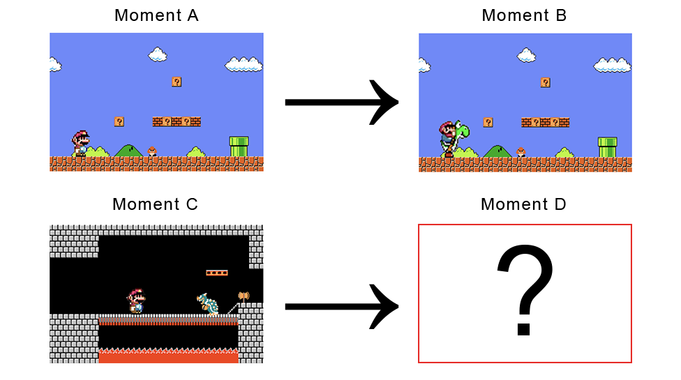

Introduction to Search by Analogy
Imagine what fills in the blank:
The primary difference between the top two moments was that Mario was on foot (left) or riding Yoshi (right). The difference between the two moments on the left was that Mario was outdoors with a goomba (top), or indoors with Bowser (bottom). You were probably able to solve the analogy above, by imagining something like this to fill in the blank:
In this analogical solution, Mario is the indoors with Bowser (as on the bottom), and riding Yoshi instead of on foot (as on the right).
This kind of analogical reasoning is easy for humans to do, but hard for them to explain, and it is not obvious that a machine can do it at all. Below, we show how a computer can be trained to understand this analogy, and provide an interactive example.
Parameterizing Videogame Moments
Each moment in a game has many distinct features. In a Mario game this could include things like the number of coins collected, the number of enemies on the screen, the number of lives remaining, score, etc.

We can assign a numeric value to each feature and create a vector (list) of numbers to represent any specific videogame moment:

Credit to Adrian Colyer for inspiring this illustration.
In reality our vectors will have many dimensions, but it will be easier to illustrate the rest of this explanation if we pretend that they only have two. In that case, our videogame moment vectors might look something like this.

If we look at two vectors (for Moment A and Moment B):

We can take the difference between them to get a new vector (B-A) This vector removes what they have in common (Mario outdoors), but leave intact what is distinct between them (on foot vs on Yoshi):

We can then add this vector to another (Moment C) to create a query vector. This is like adding the distinction defined above (on foot vs on Yoshi) to Moment C:


Moments close to this query vector should be close to Moment C, offset by the difference between Moment A and Moment B. The closest moment to this vector is our analogy search result, Moment D.
The interactive below contains some examples of successful analogy search for different games. You can also make your own queries and see what happens. You’ll see the best match (Moment D). You will also see, for each moment in the corpus, similarity to Moment C, and similarity to the difference between Moment A and Moment B: